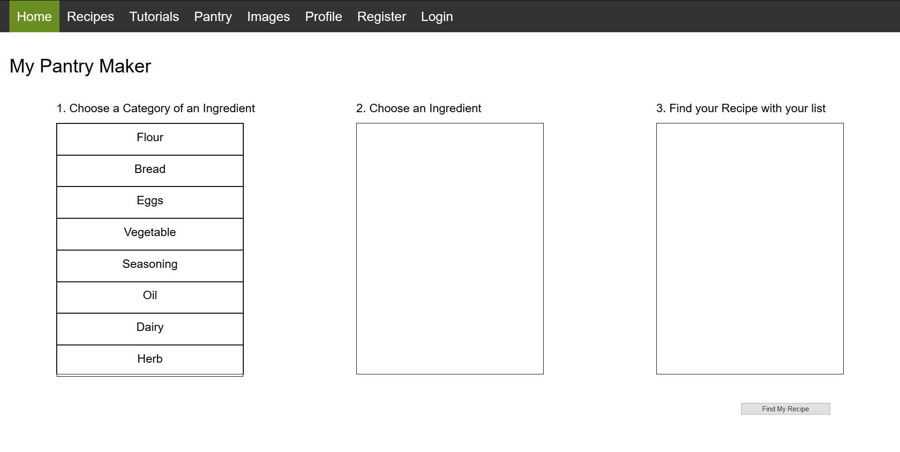
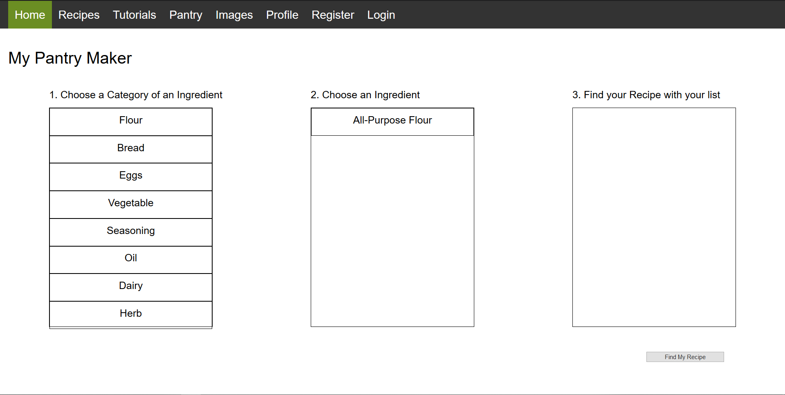
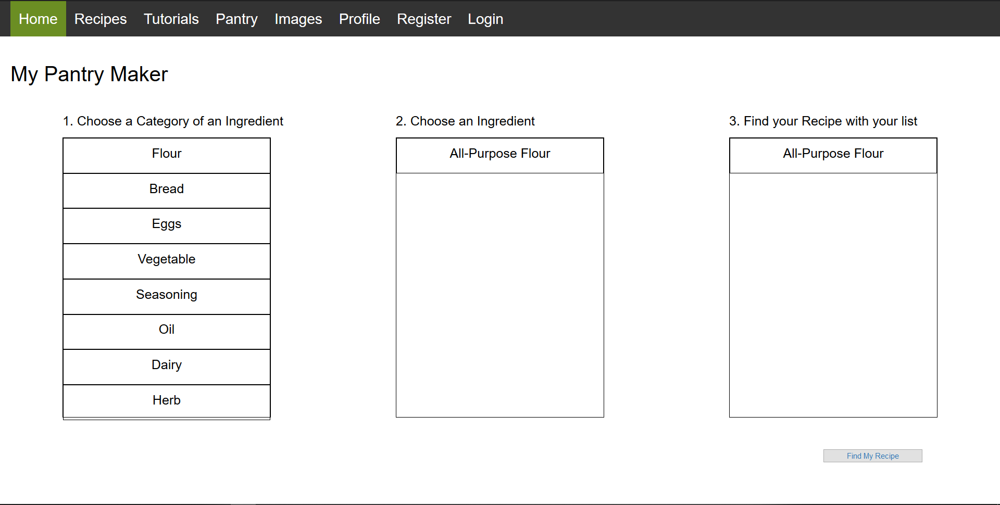

MVF 4: Pantry Maker
Description
The pantry recipe maker allows users to compile a list of which ingredients they have available. The website will filter through the recipe database and provide a recipe that uses only the ingredients provided by the user.
Similar to the search function, the website will present a list of matching recipes that users can then select for further details. This allows users to quickly find a recipe they can make without needing to shop for new ingredients.
Outcome
The function of choosing your ingredients that are grouped in categories and finds the user recipes based on the chosen ingredients is not fully functional. The concept of its functionality is operational which presents how the functions would look like in the future.
  However, it is extremely basic and will not produce the following functions:
This is due to again, inadequate knowledge of php. Using ECHO to insert the code of line to present the ingredients does, it doesn’t echo the class of an element. Meaning another .css file needs to be created for the specific element that also doesn’t conflict with the main.css file used for all of the website.
Windfall
There was no quicker way to complete the functionality of it, the amount of time needed to increase due to php inexperience which was important for the function to work.